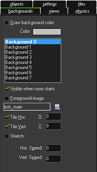

Tutorial
Page 12 of 15
Final Polish - Backgrounds
Our first game is ready but it needs some finishing touches to make it a bit nicer. For example, some music, a score display, a nicer background... These are all things that will improve the game and make it
a nicer experience for those that play. To start with, let's add a background...
The grey background of the room is rather boring, and so we are going to use a new type of resource, the background resource. To add one, goto the Resources Menu and choose Create Background. The
Background Properties window will appear, and you should click on the "Name" field and rename it to "bck_main". Now, click on the Load Background button, navigate to the Game Assets folder
and select the image file background.png.
We need to assign this background image to the room, so double click on the game room in the resource tree to open it up, then click on the "backgrounds" tab. You then need to deselect the property Draw Background
Color (as we do not need to) then click on the little menu icon in the middle and pick the bck_main in the popup menu. As you will see, in the room we suddenly have a nice background. Note the two properties Tile Hor.
and Tile Vert. that are available on this tab. They indicate that the background must be tiled horizontally and vertically, that is, repeated to fill the whole room. For this to work correctly the background image must be
made such that it nicely fits against itself without showing cracks.
The room editor tab should now look like this:

Click on the Next button to go to the next page of the tutorial.